Floor 3: The Dimmed ConstellationsVerdieping 3: De Gedoofde Sterrenbeelden



Mechanics
Raid-tip: de drie sterrenbeelden moeten binnen 10 tellen na elkaar uit. Breng ze eerst alle drie laag, en onderbreek het Sterrenlied van de Pluis!
Raid-tip: de Bultguh stormt over een rode baan: stap eruit.
Raid-tip: de Kleine Pluis heelt de anderen: onderbreek haar lied.
- Three at once. The Great Cuddle (tough): Knuffelklem = a circle on its target, the rest moves away; Berenbrul = a donut, so go INSIDE.Drie tegelijk. De Grote Knuffel (taai): Knuffelklem = een cirkel op het doelwit, de rest gaat weg; Berenbrul = een donut, dus ga naar BINNEN.
- The Flying Bultguh charges over a red lane: step out.De Vliegende Bultguh stormt over een rode baan: stap eruit.
- The Little Fluff heals the other two: interrupt her Star Song.De Kleine Pluis heelt de andere twee: onderbreek haar Sterrenlied.
- At 0 they are not beaten but "out" (they glow). Then a 10-second window runs: all three must go out inside it. Too late? They light each other again, at 40%.Op 0 zijn ze niet verslagen maar "uit" (ze stralen). Dan loopt er een venster van 10 s: alle drie moeten erin uit. Te laat? Dan steken ze elkaar weer aan, op 40%.
- The raid frames show the three bars and the window.In de raidframes zie je de drie balken en het venster.
LootBuit
Small chest per player: coins and a 30% chance of a Sterrenzijde piece.
Kleine kist per speler: munten en 30% kans op een Sterrenzijde-stuk.
← previous floorvorige verdieping next floorvolgende verdieping →
Hidden by your spoiler setting.Verborgen door je spoilerinstelling.